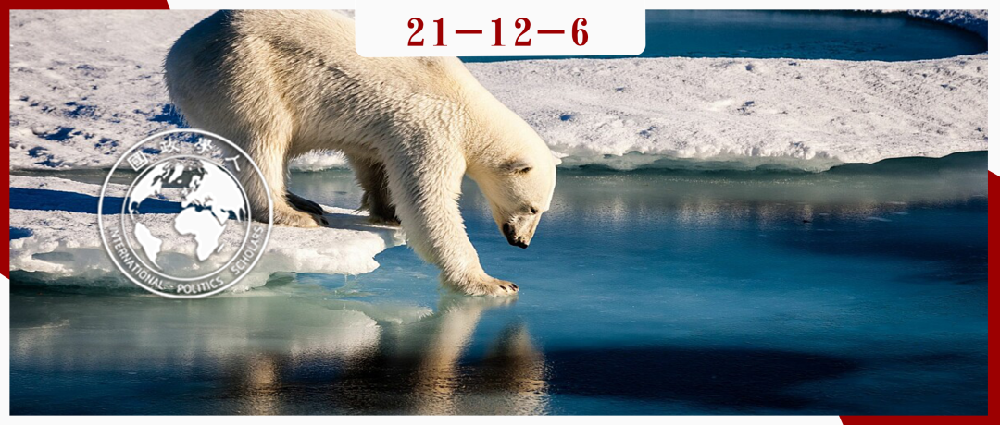
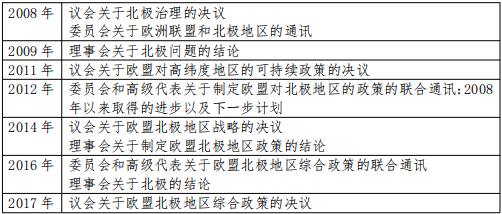

收录于合集
#《国际关系前沿》2021年第12期 22 个
#欧盟 1 个
#北极 1 个
#地缘政治 3 个

作品简介
作者： Andreas Raspotnik，北极研究所高级研究员；Andreas Østhagen，北极研究所高级研究员。
编译： 谭伟业（国政学人编译员，中国人民大学国际关系专业研究生）
来源： Andreas Raspotnik & Andreas Østhagen (2019): What about the Arctic? The European Union’s Geopolitical Quest for Northern Space, Geopolitics , DOI:10.1080/14650045.2019.1670643
归档： 《国际关系前沿》2021年第12期，总第39期。

内容摘要
过去十年里，欧盟确立了地缘政治角色的身份，积极寻求参与制定近邻的空间秩序。为了更好地理解欧盟现有的地缘政治特质，本文讨论了欧盟十年来努力在其北部近邻（即北极地区）建构合法性的问题。而在欧盟地缘政治角色的讨论中，北极常常受到忽视。本文通过考察2008年至2018年欧盟参与北极的行动，探究欧盟作为一个具备不断发展着的地缘政治身份的国际行为体，如何发挥更为广泛的作用。在过去几十年里，欧盟在对世界秩序、法治和善治概念化的同时，也展示了其地缘政治的雄心。 本文基于长达十年的研究，更为清晰地描述了欧盟作为多种机构的集合体，如何试图将其地缘政治雄心强加给一个在二十一世纪初经历了诸多变化的邻近地区，并且从概念上探讨了是什么塑造了北极地区富有地缘政治动机的欧盟。
文章导读
01
简介
尽管学术界对地缘政治的兴趣日益浓厚，但在欧洲的政治科学和相关国际关系领域中，地缘政治的概念仍然处于次要地位。普遍的设定是，基于欧盟本身的独特性，包括其历史、身份，或是其缺乏军事和外交政策力量的特征，所以欧盟不能被归类为地缘政治角色。但是，与政治科学相反， 政治地理学将欧盟作为一个新兴的地缘政治空间，即将欧盟描绘为一个地缘政治主体、行为者或具有地缘政治作用的实体 。鉴于许多学者已经承认欧盟是重要的地缘政治角色，研究重点便在于欧盟的外交政策是如何通过其地缘政治愿景表现出来的。因此，为了更好地理解欧盟已经存在的地缘政治性质，有必要对欧盟对近邻采取行动进行细致的考察。
本文着眼于一个学术界往往忽视的欧盟近邻：北极地区。欧盟在北极的参与能够揭示欧盟不断发展着的地缘政治身份，是研究欧盟这一国际行为体的精彩案例。欧盟一直将其外部世界视为不稳定因素的来源。这就引发了一个问题：欧盟是如何看待自身与近邻地区的交往的，尤其是21世纪初备受关注的北极地区？本文的研究问题是： 为何欧盟在已经具备强大能力、良好双边关系和充足资金的情况下，仍未能成功地“进入”北极这一地区？
本文的研究对象是十年间（2008-2018）欧盟在北极地区作为新型地缘政治角色的发展。作者深入分析了过去九年来欧盟的北极政策文件，并对其进行话语分析或引用其他学者的话语分析。此外，作者还在同期进行了27次同欧盟委员会（European Commission）、欧盟对外行动署（EEAS）、欧洲议会（EP）议员及欧盟成员国代表的访谈。这些访谈是半结构化的，访谈对象是曾经或正在研究欧盟北极政策的专家。
本文的论述结构如下：首先简单描述当下北极的状况，然后总结欧盟与其“北方近邻”的首次接触，特别是其“北方维度倡议”（Northern Dimension Initiative ）。这些背景介绍为作者后面分析十年来欧盟追求其独特北极政策以及与欧盟以外北方地区接触奠定基础。最后，作者得出了欧盟与其北方地区的接触如何有助于理解欧盟充当地缘政治角色的结论。
02
作为地缘政治角色的欧盟？
作者认为，欧盟影响周边地区的主要方式是通过发展出一套地缘政治话语和理念，并且在对世界秩序、核心价值观、法治和善治概念化的同时，展示出特定的国际雄心。然而这种相当模糊的地缘政治学说主要强调 欧盟通过政治和经济合作、规范扩散等途径实现其雄心，而不必通过传统学说强调的军事存在和相关力量的外部投射 。欧盟的目标是实现“邻近地区的自我支撑结构（self-supporting structures in neighbouring regions）”，使得这些地区或多或少地符合欧盟的标准。
作者从地缘政治的角度剖析欧盟的角色，认为除了实体地理空间以外，对空间独特的心理认知也会影响行动。因此地理不是一个既定的固定物，而是“政治行为者在空间方面构想和实践国际政治的方式”。作者在研究欧盟的北极政策文件时，认为这一点尤为重要，即这些政策并不是从预先赋予的政治任务中产生的，而是在与具备不同兴趣、专长和具体法律能力的利益相关者，在起草、磋商和谈判的漫长过程中产生的。作者下一步研究如何更好地理解欧盟与其北部更广泛地区的接触。
03
21世纪北极的地缘政治
从法律上讲，北极地区受到一系列复杂的国际条约和计划、双边协议、国家和地方法律与政府及非政府倡议的管辖。但在政治上，北极理事会是最重要的制度安排，基本上汇集了三类参与者：成员国（8个北极国家）、永久参与者（6个原住民组织）及观察员（13个非北极国家、14个政府间及议会间组织以及12个非政府组织）。北极理事会的政策巩固了“以领土为界限的未来北极愿景”，在决定谁“在里面”和“在外面”的区分中，拥有北极海岸线或领土是首先被考虑的。 因此，“进入”北极在很大程度上取决于行为体如何成功地利用该地区的框架及象征，以及如何将自身与现有北极大国联系在一起 。作者认为，欧盟在这方面相对稚嫩，但却一直努力希望在未来能够富有经验。
04
北方地缘政治空间？
（1）欧盟及其“北方维度倡议”
**
**
欧盟的北方一直以来被排除在共同近邻政策之外。“欧盟近邻政策”发展成为“只聚焦南部和东部”的政策，因为欧盟北部和西北部的近邻人口及争端都更少。事实上，在欧盟用语中甚至不存在“北方近邻”这一用词。
“欧洲北部”作为一个独特欧洲政治空间的政治和概念构想是在上世纪90年代中后期才发展起来的，并与欧盟北扩进程密切相关。1997年，时任芬兰总理Paavo Lipponen公开发起了“北方维度倡议”。“北方维度倡议”是一个政治尝试，不仅在制度上将欧洲北部纳入欧盟政策结构当中，而且提升了人们对这个潜在欧盟行动重心地区的认识。随着芬兰和瑞典成为欧盟成员国，以及挪威和冰岛通过欧洲经济区与欧盟联系在一起，欧盟获得了其“自然北方维度”，因此也需要相关政策的支持。
2006年，欧盟更新了其“北方维度倡议”，与冰岛、挪威和俄罗斯建立了平等伙伴关系。这一政策具有相当灵活的政策框架，旨在促进对话和合作，特别是在环境、公共卫生和社会福利、运输和物流以及文化领域。“北方政策”是一个相对有限和低水平的政策工具，主要是为了服务于芬兰和瑞典（以及波罗的海三国）对抗俄罗斯的利益。而北极地区则被忽视了。
（2）更北的地方？制定北极政策
2008年，欧盟高级代表（HR）和欧盟委员会（the Commission）发布了首份北极地区的联合政策文件，其中指出：极地冰盖，特别是北极冰盖的快速融化正在开辟新的航道和国际贸易航线。此外，北极地区巨大的碳氢化合物资源的可及性正在改变该地区的地缘战略动态，可能对国际稳定和欧洲安全利益产生影响。截至2019年，欧盟已发布了10份北极政策文件，包括委员会的三份联合通讯、理事会的三个结论及议会的四项决议。（见表1）
表1：2008年至2017年欧盟北极政策的发展

这是欧盟第一次面临这样一个近邻地区，即欧盟不能作为一个对其邻国的主导行为者（或将其内部设置和政策外部化）。相反，它被束缚在一个独特的区域系统中，该系统基于强大的国家行为者的国家利益，建立在轻型区域结构之上，并使用传统的政府间关系工具 。21世纪初的北极提出了一个有趣的问题，即欧盟如何进入“北极”，以及如何使相关行动合法化。
05
欧盟在北极扮演地缘政治角色
在北极地区，欧盟10项政策文件构成了一个整体框架。通过全球战略，欧盟阐明了其战略利益，即保持该地区的低张力，拥有运作良好的法律框架和牢固的政治和安全合作形式。此外，气候变化被认为是欧盟安全的基本威胁因素，而只有一个全球的、基于多边的秩序才能确保和平及可持续发展。欧盟的目标就是在全球行为体的网络中充当议程的塑造者、连接者和促进者。
学者Raspotnik曾提出欧盟在北极地区的五个关键角色：欧盟是应对气候变化的领导者；可持续发展的管理者；治理的稳定者和促进者；原住民权利的促进者；动物福利的守护者。欧盟在这一区域中加强政治、经济和环境的相互依存，在这个未定义的地缘政治空间中促进稳定和可持续发展。因此，作为其区域方法的一部分，欧盟通常会强调其理念特点，即不仅强调其国际经济权重，而且强调其在区域一体化、跨国治理、环境保护和研究方面作为领导者的优势。
然而欧盟在推行其理念时也会遇到一些问题。首先是地理空间并不像最初所设想的那样虚无、不确定或处于流动之中。其次，欧盟的能力本质上是有限的。一些北极国家在地缘政治上（如俄罗斯和美国）或发展程度上（如冰岛和挪威）可以与欧盟匹敌，而这些北极国家往往对欧盟的参与持负面态度。海豹产品禁令就是北极国家与欧盟分歧的显著例子。而随后欧洲议会及一些议员试图禁止在欧盟管辖范围以外开采石油，并呼吁仿照在无人居住的南极洲那样制定《北极条约》，便进一步扩大了这种分歧。其中欧盟与俄罗斯的分歧尤为显著，其原因可能在于欧盟的东部边界，因为欧盟与俄罗斯在俄罗斯向西逼近以及乌克兰和格鲁吉亚问题上分歧很大。此外，欧盟还在其北极政策文件中曲解了区域主权对于北极国家的意义，使得加拿大和俄罗斯公开反对欧盟成为北极理事会的永久观察员。
欧盟向北推进的另一个挑战是，对“北极空间”缺乏明确的界定。在过去十年里，欧盟政策制定者对在各种政策文件中划定北极空间漠不关心。欧盟在文件中基本上只将北极视为海洋和对外政策领域。然而北极地区不仅仅是一个外交政策的问题，而是一个非常规的政策组合，涵盖了内部、跨区域和外部政策。
欧盟一直对两个概念混淆不清：一是在地理上聚焦欧洲北极；二是欧盟作为全球行为者，参与议题涵盖范围从动物保护到减少北极二氧化碳排放 。这一矛盾在其北极政策中表现得尤为明显。其中一些政策是针对瑞典和芬兰的北部地区问题量身定制的，但是在另一些更大的政治问题上却采取了“自上而下”的路径（如《北极条约》），这又反过来引起了北极沿海国家的愤怒和拒绝。
欧盟的政策也并不连贯。总的来说，在北极地区的文献和官方文件中，似乎存在一种倾向，将欧盟描绘成统一的行为体。但是，成员国和众多政治派别和政党之间的多重利益的复杂性却被忽视了。特别是在审视欧盟机构的政策产出时，有必要区分委员会、理事会、欧盟对外行动署和欧洲议会的不同声音，以及它们对政策进程的实际影响。比如，区域性的一系列政策是欧盟北极区域行为者明确要求的结果，也是委员会处理这些问题的部门（如地区与城市政策总司、科研与创新总司和交通运输总司）的诉求。而更大的战略性政策（如治理结构、气候变化倡议等）要么就来自欧盟对外行动署的官员，要么就来自具有特定北极议程的欧洲议会议员。
06
结论
因此，自20世纪90年代以来，欧盟“北方”的构成已然不同。一方面仅包括欧盟的成员国（丹麦、瑞典和芬兰）。另一方面，这一区域由俄罗斯主导。而冰岛与挪威作为欧洲经济区的国家，虽然介于两者之间，但必然更靠近欧盟。
因此，作者认为，虽然欧盟在过去20年中两项北方政策倡议（即“北方维度倡议”与总体的北极政策）本质并不相同，但是两者都带有地缘政治色彩。更广泛的北极地区对于欧盟而言并不是一个“典型的邻居”，而更像是“伙伴关系”。在这个地区中，欧盟是众多伙伴中的一员，且受到来自强大行为体的挑战。在这个地区，欧盟似乎陷入了一个地理上的两难境地，即一个旧的陆上欧盟北极地区和一个新的海上环极区。 对于后者，欧盟还没有找到一个令人信服的说法，以便在其内部和外部伙伴中确定其区域偏好，并说明它为什么应该参与北极地区。
尽管在过去十年中作出了重大努力，但欧盟的区域合法性的建设尚未完全实现 。欧盟既没有对北极地区的雄心壮志做出明确声明，也没有实现其预先的目标，即成为北极理事会的永久观察员。在其近邻政策中，欧盟第一次面对这样一个区域，它不能作为一个对其近邻的主导者（或将其内部政策外部化），而是被束缚在一个独特的“区域系统”当中。
尽管欧盟已经是一个事实上的区域行为者，但欧盟的做法并没有在北极地区获得成功。欧盟在北极治理的谈判桌上没有被完全接受，其机构代表也没有能够在欧盟创造更多的北极合法性，以便最终将北极地区放在欧盟议程更突出的位置上。尽管气候变化和研究工作都是欧盟进入北极的切入点，但仅凭此不可能成为其北极政策的驱动力。
最后，作者引用了Bachmann的观点，认为欧盟规范空间互动的偏好只有“在行为者有兴趣被规范的情况下才可以实施，否则欧盟机构很快就会达到其极限”。因此，欧盟是否真的有意愿及有能力创造一个独特的欧盟互动空间还有待观察。
译者评述
本文从地缘政治空间的视角出发，聚焦欧盟的北极政策，通过政策文本分析与官员采访等方式，得出欧盟试图在北极地区施加地缘政治影响但是成效不佳的结论。本文的亮点是对欧盟北极政策面临问题的分析，特别是作者从地理空间的角度着手，分析了欧盟进入“北极空间”过程中的对抗性、模糊性和复杂性，得出欧盟北极政策的影响力有限的结论。运用地缘空间分析的的视角分析欧盟的地缘政治雄心非常新颖，且具有很强的说服性，展现了欧盟在北极创造规范空间所面临的重重挑战。这也为未来中国更多参与北极事务、增强其合法性具有很强的现实借鉴意义。
词汇整理
内 在的 Intrinsic
本土的，固有的 Indigenous
领土性质或状态 Territoriality
极地附近的 Circumpolar
独特的，特殊的 Sui generis
责编 | 戎秦婴 卫艺璇
排版 | 何婕 云琪布日
文章观点不代表本平台观点，本平台评译分享的文章均出于专业学习之用, 不以任何盈利为目的，内容主要呈现对原文的介绍，原文内容请通过各高校购买的数据库自行下载。

国政学人
支持学术公益与知识传播
微信扫一扫赞赏作者 __赞赏
已喜欢，对作者说句悄悄话
取消 __
发送给作者
发送
最多40字，当前共字
上一页 1/3 下一页
长按二维码向我转账
支持学术公益与知识传播
受苹果公司新规定影响，微信 iOS 版的赞赏功能被关闭，可通过二维码转账支持公众号。